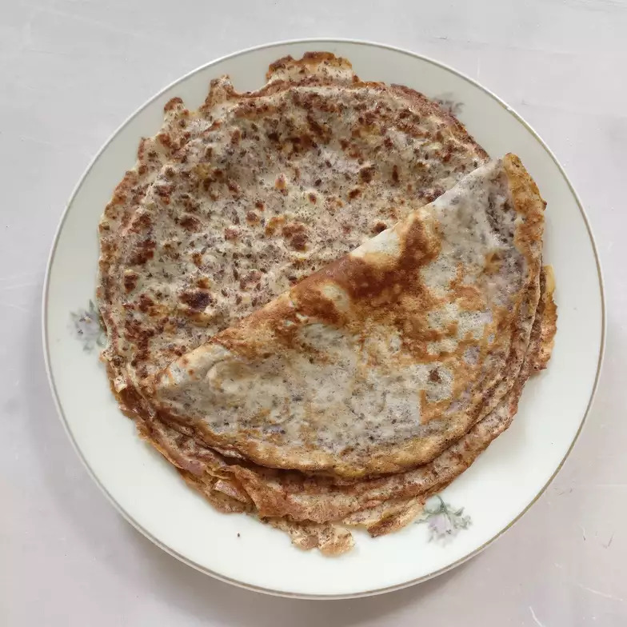

Return to main page
Buckwheat crepes

These savory buckwheat crepes go well with any sort of condiments.
I like to put some cheese in a line across the center and fold both sides
in to look like a wrap.
Ingredient Checklist
- 3 large eggs
- 1 tablespoon white sugar
- Salt to taste
- 2½ cups milk
- 1½ cups buckwheat flour
- 2½ tablespoons buckwheat flour
- 1¼ cups whole wheat flour
- 2 tablespoons vegetable oil, or more as needed, divided
Recipe instructions
- Whisk eggs, sugar, and salt together in a large bowl. Pour in milk and whisk to combine. Gradually add 1 1/2 cups plus 2 1/2 tablespoons buckwheat flour and whole wheat flour, whisking to combine. Don't be afraid if the mixture looks too watery; it works well. Stir in 1 tablespoon vegetable oil.
- Heat a frying pan over medium-high heat. Brush the bottom with a little oil and pour in 1 ladle of batter in a swirl, so it spreads evenly into a thin layer. Cook until bubbles form and crepe is browned on the bottom, 1 to 3 minutes, then flip and repeat on the other side. Remove to a plate and repeat to cook remaining crepes, adding more oil as needed.
Return to main page